|
I am an associate professor (副教授/博导) in the State Key Lab of CAD&CG
and a professional advisor in Cho Kochen Honors College (竺可桢学院专业导师), Zhejiang University. I am also a recipient of Excellent Young Scholars, NSF-China.
My research interest includes appearance acquisition / modeling / design / rendering
and recently applied deep learning in computer graphics / vision.
I received my Ph.D. from Dept. of Computer Science, Yale University, under the supervision by Prof. Julie Dorsey and Prof. Holly Rushmeier. Prior to that, I obtained my B.Sc. from Dept. of Computer Science and Engineering, Fudan University. I was also a visiting student in Internet Graphics Group at Microsoft Research Asia.
International Students (国际学生): Due to the high volume of inqueries, I cannot reply to such emails. Please apply to our school and do not contact me directly. Thank you for your understanding!
To Prospective Students (国内学生)
I leverage the knowledge from multiple fields to solve challenging problems in
computer graphics / vision. This involves a lot of different cool things,
including software & hardware programming, and mechanical design. I am looking for talented students with a strong background in one or more of the following fields:
1. Computer Graphics and Vision.
2. Deep Learning.
3. Mechanics / Robotics.
4. Optics.
Teaching
Computer Graphics (2015-F, 2016-S/F, 2017-S/F, 2018-S/F, 2019-F, 2020-F, 2021-F)
Intelligent Acquisition of Visual Information (2019-F, 2020-F, 2021-F) For students who are unable to register my course due to limited
capacity, please make sure that you select the course in the second round of
registration (补选) and see me in the first class. Please register
the course according to your curriculum (培养计划). For computer science major, please take the
course when you are at least a
junior student (大三), as this course requires the
knowledge from a variety of fundamental courses.
Selected Publications
| 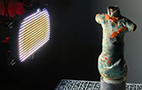 | Free-form Scanning of Non-planar Appearance with Neural Trace Photography Xiaohe Ma, Kaizhang Kang, Ruisheng Zhu, Hongzhi Wu+ and Kun Zhou ACM Trans. Graph. (Proc. SIGGRAPH 2021), 40, 4 (Aug. 2021), 124. [Project Page] +: corresponding author. |
|||
| 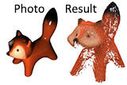 | Learning Efficient Photometric Feature Transform for Multi-view Stereo Kaizhang Kang, Cihui Xie, Ruisheng Zhu, Xiaohe Ma, Ping Tan, Hongzhi Wu+ and Kun Zhou [arXiv] +: corresponding author. |
|||
| Differentiable Rendering: A Survey (in Chinese) / 可微绘制技术研究进展 Weiwei Xu, Yang Zhou, Hongzhi Wu and Jie Guo. Journal of Image and Graphics, 26, 6 (2021). [Paper] |
||||
| Learning Efficient Illumination Multiplexing for Joint Capture of Reflectance and Shape Kaizhang Kang, Cihui Xie, Chengan He*, Mingqi Yi*, Minyi Gu, Zimin Chen, Kun Zhou and Hongzhi Wu ACM Trans. Graph. (Proc. SIGGRAPH Asia 2019), 38, 6 (Nov. 2019), 165. (Selected as a back-cover image) [Project Page] *:(who) were undergraduate students when working on this project. |
||||
| 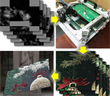 | Efficient Reflectance Capture Using an Autoencoder Kaizhang Kang*, Zimin Chen*, Jiaping Wang, Kun Zhou and Hongzhi Wu ACM Trans. Graph. (Proc. SIGGRAPH 2018), 37, 4 (Aug. 2018), 127. [Project Page] Patent# ZL201810623164.8. 2nd Place in ACM Student Research Competition, Undergraduate Group. *:Joint first authors, both of whom were undergraduate students when working on this project. |
|||
|
Modeling Hair from an RGB-D Camera Meng Zhang, Pan Wu, Hongzhi Wu, Yanlin Weng, Youyi Zheng and Kun Zhou ACM Trans. Graph. (Proc. SIGGRAPH Asia 2018), 205. [ACM Digital Library] |
||||
| 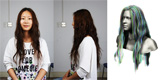 |
A Data-driven Approach to Four-view Image-based Hair Modeling Meng Zhang, Menglei Chai, Hongzhi Wu, Hao Yang and Kun Zhou ACM Trans. Graph. (Proc. SIGGRAPH 2017), 36, 4 (Jul. 2017), 156. [Paper(.PDF), 1.7MB][Video(.MP4),47.7MB] |
|||
| 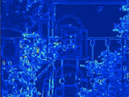 |
Intrinsic Light Field Images Elena Garces, Jose I. Echevarria, Wen Zhang, Hongzhi Wu, Kun Zhou and Diego Gutierrez Computer Graphics Forum, 36(8), 589-599, Dec. 2017. |
|||
| 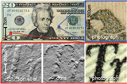 | Simultaneous Acquisition of Microscale
Reflectance and Normals Giljoo Nam, Joo Ho Lee, Hongzhi Wu, Diego Gutierrez and Min H. Kim ACM Trans. Graph. (Proc. SIGGRAPH Asia 2016), 35, 6 (Nov. 2016), 185. [Paper(.PDF), 17.8MB][Video(.MOV), 36.0MB][Supp. Material #1(.PDF), 0.3MB][Supp. Material #2(.PDF), 46.8MB][Bibtex][Project Page] |
|||
| 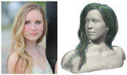 |
AutoHair: Fully Automatic Hair Modeling from a Single Image Menglei Chai, Tianjia Shao, Hongzhi Wu, Yanlin Weng and Kun Zhou ACM Trans. Graph. (Proc. SIGGRAPH 2016), 35, 4 (Jul. 2016), 116. [Paper(.PDF), 12.4MB][Video(.MP4), 118MB] |
|||
|
Real-time Facial Animation with Image-based Dynamic Avatars Chen Cao, Hongzhi Wu, Yanlin Weng, Tianjia Shao and Kun Zhou ACM Trans. Graph. (Proc. SIGGRAPH 2016), 35, 4 (Jul. 2016), 126. [Paper(.PDF), 12.0MB][Video(.MP4), 172MB] |
||||
|
Simultaneous Localization and Appearance Estimation with a Consumer RGB-D Camera Hongzhi Wu, Zhaotian Wang and Kun Zhou IEEE Trans. on Visualization and Computer Graphics, 22, 8(Aug. 2016), 2012-2023. Presented at SIGGRAPH Asia 2016 and Graphics Interface 2016. [Project Page] Patent# CN104866861, Jan. 2018. |
||||
| 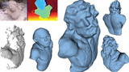 |
Shape Completion from a Single RGBD Image Dongping Li, Tianjia Shao, Hongzhi Wu and Kun Zhou IEEE Trans. on Visualization and Computer Graphics, 23, 7(Jul. 2017), 1809-1822. [Slides(.PPSX), 20.4MB] |
|||
| 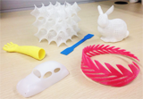 |
Stress Constrained Thickness Optimization for Shell Object Fabrication Haiming Zhao, Weiwei Xu, Kun Zhou, Yin Yang, Xiaogang Jin and Hongzhi Wu Computer Graphics Forum, 36: 368-380, Sep. 2017. |
|||
| 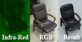 |
AppFusion: Interactive Appearance Acquisition using
a Kinect Sensor Hongzhi Wu and Kun Zhou Computer Graphics Forum, 34(6), 289-298, Sep. 2015. [Paper(.PDF), 10.2MB] [Video(.MP4), 49.1MB] [Presentation(.PPSX), 79.5MB] [BibTex] Patent# CN103955958, Aug. 2016. |
|||
| 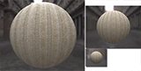 |
Effects of Approximate Filtering on the Appearance of Bidirectional Texture Functions Adrian Jarabo, Hongzhi Wu, Julie Dorsey, Holly Rushmeier and Diego Gutierrez IEEE Trans. on Visualization and Computer Graphics, 20, 6(Jun. 2014), 880-892. [Paper(.PDF), 9.1MB] [Supplementary Material(.PDF), 21.3MB] [BibTex] |
|||
| 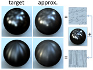 | Inverse Bi-scale Material Design Hongzhi Wu, Julie Dorsey and Holly Rushmeier ACM Trans. Graph. (Proc. SIGGRAPH Asia 2013), 32, 6 (Nov. 2013), 163:1-163:10. (Selected for the SIGGRAPH Asia movie trailer) [Project Page] |
|||
| 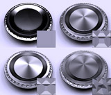 | Physically-based Interactive Bi-scale Material Design Hongzhi Wu, Julie Dorsey and Holly Rushmeier ACM Trans. Graph. (Proc. SIGGRAPH Asia 2011), 30, 6 (Dec. 2011), 145:1-145:10. (Selected as a back-cover image) [Paper(.PDF), 8.5MB] [Video(.MP4), 30.6MB] [YouTube] [SIGAsia Slides(.PPSX), 29.6MB] [BibTex] |
|||
| 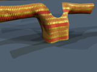 | A Sparse Parametric Mixture Model for BTF Compression, Editing and Rendering Hongzhi Wu, Julie Dorsey and Holly Rushmeier Computer Graphics Forum (Proc. EUROGRAPHICS 2011), 30(2), 465-473. [Paper(.PDF), 4.9MB] [Video(.ZIP), 21.4MB] [YouTube] [EG Slides(.PPSX), 4.7MB] [BibTex] |
|||
| 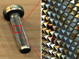 | Characteristic Point Maps Hongzhi Wu, Julie Dorsey and Holly Rushmeier Computer Graphics Forum (Proc. EUROGRAPHICS Symposium on Rendering, 2009), 28(4), 1227-1236. [Paper(.PDF), 11.2MB] [EGSR Slides(.ZIP) 2.6MB] [BibTex] |
|||
| 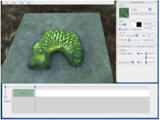 | Context-Aware
Textures Jianye Lu, Athinodoros S. Georghiades, Andreas Glaser, Hongzhi Wu, Li-Yi Wei, Baining Guo, Julie Dorsey and Holly Rushmeier ACM Trans. Graph. 26, 1(Jan. 2007), 3. (Selected as the cover image) [Paper(.PDF), 3.6MB] [Video(.AVI), 22.6MB] [Youtube] [BibTex][Project Webpage] |
|||
| 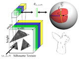 | Silhouette
Texture Hongzhi Wu, Li-Yi Wei, Xi Wang and Baining Guo Rendering technique (Proc. EUROGRAPHICS Symposium on Rendering, 2006), 285-296. [Paper(.PDF), 4.1MB] [Video(.MOV), 44MB] [YouTube] [EGSR Slides(.PPSX), 12.3MB] [BibTex] |
|||
| Computer Graphics: Principles and Practices, 3rd Ed. John F. Hugues, Andries van Dam, Morgan McGuire, David F. Sklar, James D. Foley, Steven K. Feiner and Kurt Akeley, Addison-Wesley, 2013. Translator for the Official Chinese Version. [Basic Topics] by Qunsheng Peng, Xinguo Liu, Lanfang Miao and Hongzhi Wu, China Machine Press, 2018. [Online Store] [Advanced Topics] by Qunsheng Peng, Hongzhi Wu, Rui Wang and Xinguo Liu, China Machine Press, 2021. [Online Store] |
Alumni
Minyi Gu (MEng 2021 / Tencent)Note
I write recommendation letters for students that closely work with me on one or more research / engineering projects. For students who take my courses only, I cannot write the letters due to highly limited interactions.